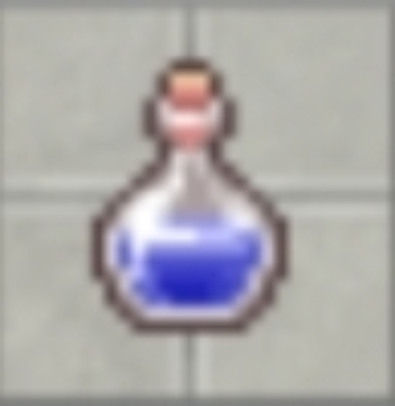

Guia de Maestria Potion

O que é a Maestria Potion?
A Maestria Potion é um item consumível raro que aumenta permanentemente os atributos de um Pokémon. É possível usar até 4 poções em um mesmo Pokémon, cada uma concedendo um bônus diferente e cumulativo.
Níveis de Maestria e Bônus
Cada poção utilizada concede um bônus de +25% em um atributo específico, seguindo a ordem abaixo:
| Uso da Poção | Bônus Concedido |
|---|---|
| 1ª Poção | +25% de Vida (HP) |
| 2ª Poção | +25% de Defesa |
| 3ª Poção | +25% de Velocidade (Speed) |
| 4ª Poção | +25% de Ataque |
Como Obter a Maestria Potion?
As principais maneiras de conseguir uma Maestria Potion no jogo são:
- Recompensa em Towers.
- Recompensa em Dungeons.
- Participando de eventos especiais.
- Obtida através do sistema de Gacha.